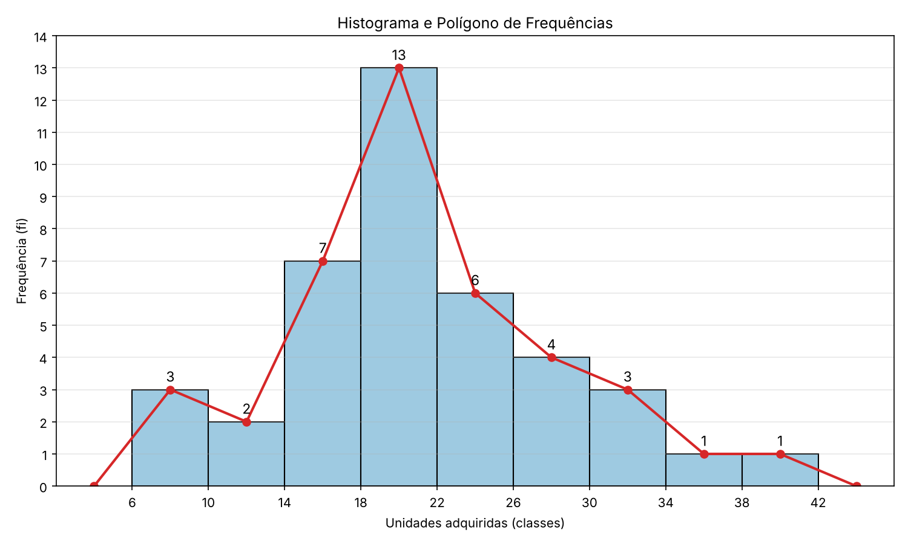

Para entender melhor como funciona, vamos resolver um exercício completo, do começo ao fim.
1. Uma empresa automobilística selecionou ao acaso uma amostra de 40 revendedores autorizados em todo o Brasil e anotou, em determinado mês, o número de unidades adquiridas por estes revendedores. Obteve os seguintes dados:
| 10 | 15 | 25 | 21 | 6 | 23 | 15 | 21 | 26 | 32 |
| 9 | 14 | 19 | 20 | 32 | 18 | 16 | 26 | 24 | 20 |
| 7 | 18 | 17 | 28 | 35 | 22 | 19 | 39 | 18 | 21 |
| 15 | 18 | 22 | 20 | 25 | 28 | 30 | 16 | 12 | 20 |
Neste exercício, n = 40 é o total de dados e k é o número de classes.
1 passo - Achar o número de classes (k)
Usamos a regra de Sturges:
k = 1 + 3,3 · log(n)
k = 1 + 3,3 · log(40)
k = 6,2868
Arredondamos para cima, então k = 7.
2 passo - Achar a amplitude de classe (Aa)
Aa = (Maior valor − Menor valor) / k
Aa = (39 − 6) / 7
Aa = 4,7143
Aqui arredondamos para baixo, então Aa = 4.
Atenção: com 7 classes de amplitude 4, só conseguiríamos ir de 6 até 34 (6 + 7 · 4 = 34), mas o maior valor é 39. Por isso continuamos criando classes de amplitude 4 até incluir o 39, e a tabela fica com 9 classes, de 6 até 42.
3 passo - Montar a tabela
O símbolo ⊢ significa que a classe inclui o limite da esquerda e não inclui o da direita. Por exemplo, 6 ⊢ 10 inclui o 6, mas o 10 já pertence à classe seguinte.
| i | Classes | fi | xi | xi² | xi²fi | xifi |
|---|---|---|---|---|---|---|
| 1 | 6 ⊢ 10 | 3 | 8 | 64 | 192 | 24 |
| 2 | 10 ⊢ 14 | 2 | 12 | 144 | 288 | 24 |
| 3 | 14 ⊢ 18 | 7 | 16 | 256 | 1792 | 112 |
| 4 | 18 ⊢ 22 | 13 | 20 | 400 | 5200 | 260 |
| 5 | 22 ⊢ 26 | 6 | 24 | 576 | 3456 | 144 |
| 6 | 26 ⊢ 30 | 4 | 28 | 784 | 3136 | 112 |
| 7 | 30 ⊢ 34 | 3 | 32 | 1024 | 3072 | 96 |
| 8 | 34 ⊢ 38 | 1 | 36 | 1296 | 1296 | 36 |
| 9 | 38 ⊢ 42 | 1 | 40 | 1600 | 1600 | 40 |
| Total | 40 | 20032 | 848 |
O histograma é um gráfico de barras coladas: cada barra é uma classe e a altura da barra é a frequência (fi). O polígono de frequências é a linha que liga os pontos médios (xi) do topo das barras, fechando no zero nas duas pontas.

A média é o valor que representa o conjunto de dados: soma-se tudo e divide-se pela quantidade. Na tabela, cada classe é representada pelo seu ponto médio.
Fórmula:
x̄ = Σ(xifi) / n
Dados da tabela: Σ(xifi) = 848 e n = 40
x̄ = 848 / 40
x̄ = 21,2
Em média, cada revendedor adquiriu 21,2 unidades.
A variância mede o quanto os dados se espalham em torno da média: quanto maior, mais espalhados. O desvio-padrão é a raiz da variância e tem a mesma unidade dos dados, por isso é mais fácil de interpretar.
Fórmula da variância:
s2 = (Σ(xi2fi) − n · x̄2) / n
Dados da tabela: Σ(xi2fi) = 20032, n = 40 e x̄ = 21,2
s2 = (20032 − 40 · (21,2)2) / 40
s2 = (20032 − 40 · 449,44) / 40
s2 = (20032 − 17977,6) / 40
s2 = 2054,4 / 40
s2 = 51,36
Fórmula do desvio-padrão:
s = √(s2)
s = √51,36
s ≈ 7,1666
Observação: aqui dividimos por n. Alguns livros usam n − 1 quando os dados são uma amostra, o que daria s2 ≈ 52,68 e s ≈ 7,26. Use o que o professor ensinou.
O coeficiente de variação (CV) mostra o desvio-padrão como porcentagem da média. Ele permite comparar a dispersão de conjuntos de dados diferentes, mesmo com unidades ou tamanhos diferentes. Quanto menor o CV, mais parecidos entre si são os dados.
Fórmula:
CV = (s / x̄) · 100
Dados: s = 7,1666 e x̄ = 21,2
CV = (7,1666 / 21,2) · 100
CV = 0,3380 · 100
CV ≈ 33,80%
Como regra prática (que varia conforme o livro), abaixo de 15% a dispersão é baixa, entre 15% e 30% é média e acima de 30% é alta. Neste exercício, 33,80% indica que as compras dos revendedores variam bastante em torno da média.